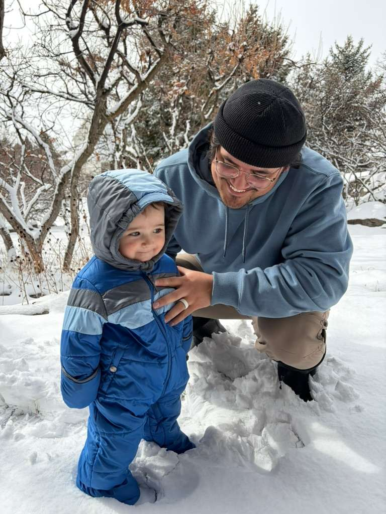

Jonah Vimahi | WDD 130

Hi! My name is Jonah Vimahi. I am from Utah and in the picture is me helping my 10 month old son play in the snow for the first time. I have been working as a Software Developer for a little over 4 years and I am looking forward to getting a formal education on my profession. I love spending time with my little family while going on walks and playing outside. I am now using filler to make the picture on the right look more appropriately positioned on the web page. I might need to do a lot here though